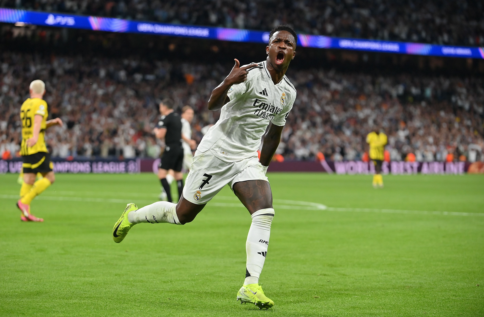

Реал Мадрид-Боруссия Д.
Всем Привет! Сегодня Я расскажу о матче Боруссия Д.-Реал Мадрид в рамке Лиги чемпионов, на Сантьяго Бернабеу 22.10.24. Шмели бодро начали первый тайм. Забили два гола. Авторы голов Мален, Байно-Гиттенс. Во втором тайме Рюдигер ответил голом(1-2). 60 минута. 62 минута-гол Винисиуса (2-2). Дальше Васкес на 83(3-2). Но им и этого было мало-Винисиус оформил дубль на 86 (4-2). На 90+6 минуте Винисиус оформил хет-трик(5-2).